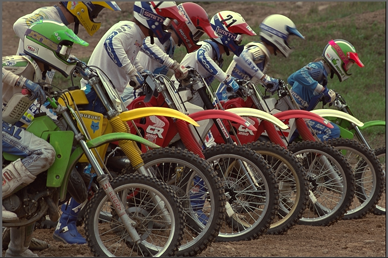
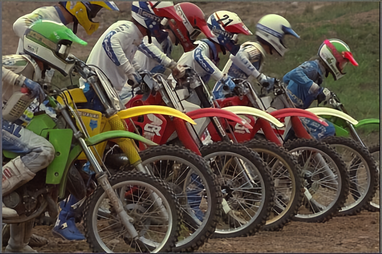
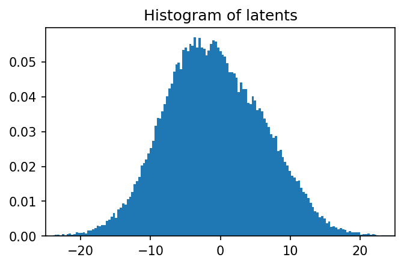
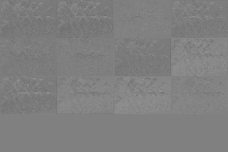
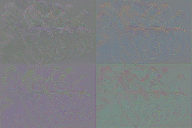

Image Compression#
import os
import torch
import matplotlib.pyplot as plt
import numpy as np
from PIL import Image, ImageEnhance
from IPython.display import display
from torchvision.transforms import ToPILImage, PILToTensor
from walloc import walloc
from walloc.walloc import latent_to_pil, pil_to_latent
class Config: pass
Load the model from a pre-trained checkpoint#
wget https://hf.co/danjacobellis/walloc/resolve/main/RGB_Li_12c_J3_nf8_v1.0.2.pth
device = "cpu"
checkpoint = torch.load("RGB_Li_12c_J3_nf8_v1.0.2.pth",map_location="cpu",weights_only=False)
codec_config = checkpoint['config']
codec = walloc.Codec2D(
channels = codec_config.channels,
J = codec_config.J,
Ne = codec_config.Ne,
Nd = codec_config.Nd,
latent_dim = codec_config.latent_dim,
latent_bits = codec_config.latent_bits,
lightweight_encode = codec_config.lightweight_encode
)
codec.load_state_dict(checkpoint['model_state_dict'])
codec = codec.to(device)
codec.eval();
Load an example image#
wget "https://r0k.us/graphics/kodak/kodak/kodim05.png"
img = Image.open("kodim05.png")
img

Full encoding and decoding pipeline with .forward()#
If
codec.eval()is called, the latent is rounded to nearest integer.If
codec.train()is called, uniform noise is added instead of rounding.
with torch.no_grad():
codec.eval()
x = PILToTensor()(img).to(torch.float)
x = (x/255 - 0.5).unsqueeze(0).to(device)
x_hat, _, _ = codec(x)
ToPILImage()(x_hat[0]+0.5)

Accessing latents#
with torch.no_grad():
X = codec.wavelet_analysis(x,J=codec.J)
z = codec.encoder[0:2](X)
z_hat = codec.encoder[2](z)
X_hat = codec.decoder(z_hat)
x_rec = codec.wavelet_synthesis(X_hat,J=codec.J)
print(f"dimensionality reduction: {x.numel()/z.numel()}×")
dimensionality reduction: 16.0×
plt.figure(figsize=(5,3),dpi=150)
plt.hist(
z.flatten().numpy(),
range=(-25,25),
bins=151,
density=True,
);
plt.title("Histogram of latents")
plt.xlim([-25,25]);

Lossless compression of latents#
def scale_for_display(img, n_bits):
scale_factor = (2**8 - 1) / (2**n_bits - 1)
lut = [int(i * scale_factor) for i in range(2**n_bits)]
channels = img.split()
scaled_channels = [ch.point(lut * 2**(8-n_bits)) for ch in channels]
return Image.merge(img.mode, scaled_channels)
Single channel PNG (L)#
z_padded = torch.nn.functional.pad(z_hat, (0, 0, 0, 0, 0, 4))
z_pil = latent_to_pil(z_padded,codec.latent_bits,1)
display(scale_for_display(z_pil[0], codec.latent_bits))
z_pil[0].save('latent.png')
png = [Image.open("latent.png")]
z_rec = pil_to_latent(png,16,codec.latent_bits,1)
assert(z_rec.equal(z_padded))
print("compression_ratio: ", x.numel()/os.path.getsize("latent.png"))

compression_ratio: 26.729991842653856
Three channel WebP (RGB)#
z_pil = latent_to_pil(z_hat,codec.latent_bits,3)
display(scale_for_display(z_pil[0], codec.latent_bits))
z_pil[0].save('latent.webp',lossless=True)
webp = [Image.open("latent.webp")]
z_rec = pil_to_latent(webp,12,codec.latent_bits,3)
assert(z_rec.equal(z_hat))
print("compression_ratio: ", x.numel()/os.path.getsize("latent.webp"))

compression_ratio: 28.811254396248536
Four channel TIF (CMYK)#
z_padded = torch.nn.functional.pad(z_hat, (0, 0, 0, 0, 0, 4))
z_pil = latent_to_pil(z_padded,codec.latent_bits,4)
display(scale_for_display(z_pil[0], codec.latent_bits))
z_pil[0].save('latent.tif',compression="tiff_adobe_deflate")
tif = [Image.open("latent.tif")]
z_rec = pil_to_latent(tif,16,codec.latent_bits,4)
assert(z_rec.equal(z_padded))
print("compression_ratio: ", x.numel()/os.path.getsize("latent.tif"))
compression_ratio: 21.04034530731638